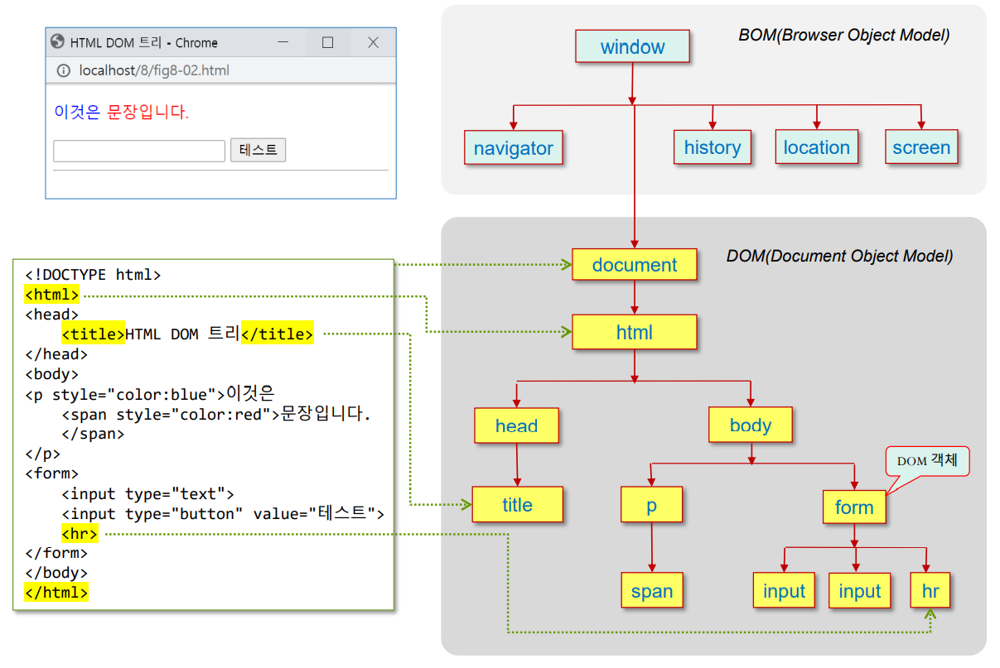
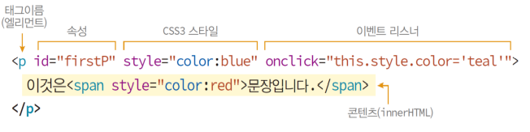
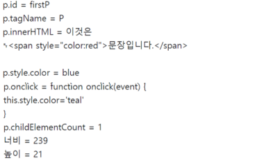
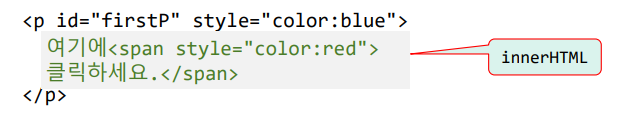
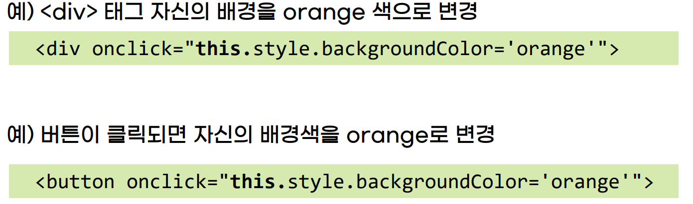

HTML 태그에 포함관계에 따라 DOM 객체의 트리(tree) 생성
DOM 트리는 부모 자식 관계

DOM 객체
DOM 트리의 한 노드
HTML 태그 당 하나의 DOM 객체 생성
(DOM 노드, DOM 엘리먼트 라고도 불림)
HTML 태그의 요소
'엘리먼트(element)'로도 불림
5가지 요소로 구성
엘리먼트 이름
속성
CSS 스타일
이벤트 리스너
콘텐츠(innerHTML)

(엘리먼트 이름 = HTML 태그명)
DOM 객체의 구성 요소
프로퍼티
메서드
컬렉션
이벤트 리스너
CSS 스타일
DOM 객체의 프로퍼티와 DOM 객체사이의 관계
DOM 객체 p의 프로퍼티, 스타일, 이벤트 리스너
이것은 문장입니다.

DOM 객체 다루기
span의 CSS3 스타일 동적 변경
function change() {
let span = document.getElementById("mySpan");
span.style.color = "green"; // 글자색 green
span.style.fontSize = "30px"; // 글자 크기는 30픽셀
span.style.display = "block"; // 블록 박스로 변경
span.style.width = "6em"; // 박스의폭. 6 글자 크기
span.style.border = "3px dotted magenta"; // 3픽셀 점선 magenta 테두리
span.style.margin = "20px"; // 상하좌우 여백 20px
}
이것은
문장입니다.
innerHTML
시작태그와 종료 태그 사이에 들어 있는 HTML 콘텐츠
innerHTML 프로퍼티 수정 = HTML 태그의 콘텐츠 변경

this
this 키워드: 객체 자신을 가리키는 자바스크립트 키워드
DOM 객체에서 객체 자신을 가리키는 용도로 사용

this 활용
여기 클릭하면 크기와 색 변경
document 객체
HTML 문서 전체를 대변하는 객체
프로퍼티 - HTML 문서의 전반적인 속성 내포
메소드 - DOM 객체 검색, DOM 객체 생성, HTML 문서 전반적 제어
DOM 객체를 접근하는 경로의 시작점
DOM 트리의 최상위 객체
브라우저는 HTML 문서 로드 전, document 객체를 먼저 생성
document 객체를 뿌리로 하여 DOM 트리 생성
document 객체 접근
window.document 또는 document 이름으로 접근
document 객체는 DOM 객체가 아님 (BOM, 연결된 스타일 시트가 없음)
document.style.color = "red"; // 오류. document에는 CSS3 스타일 시트가 연결되지 않음
DOM 트리에서 DOM 객체 찾기
1. ID로 찾기 2. 태그 이름으로 찾기
document.getElementByTagName() let divTags = document.getElementsByTagName("div"); let n = divTags.length; // 웹 페이지에 있는 div 태그의 개수
3. class 속성으로 찾기
document.getElementByClassName() let plainClasses = document.getElementsByClassName("plain"); let n = plainClasses.length; // 웹 페이지에 class=“plain” 속성을 가진 태그의 개수
function change() {
let spanArray = document.getElementsByTagName("span");
for(let i=0; i<spanArray.length; i++) {
var span = spanArray[i];
span.style.color = "orchid";
span.style.fontSize = "20px";
}
}
내가 좋아하는 과일
저는 빨간 사과를 좋아해서
아침마다 한 개씩 먹고 있어요. 운동할 때는 중간 중간에 바나나를 먹지요. 탄수화물 섭취가 빨라
힘이 납니다. 또한 달콤한 향기를 품은 체리와
여름 냄새 물씬 나는 자두를 좋아합니다.
document.write()와 document.writeln()
write() 와 달리 writeln은 한 칸 띄는 효과를 준다 (한 줄 아님)
document의 열기와 닫기
document.open()
현재 브라우저에 출력된 HTML 콘텐츠를 지우고 새로운 HTML 페이지 시작.
즉 document 객체에 담긴 DOM 트리를 지우고 새로 시작 document.close()
현재 브라우저에 출력된 HTML 페이지 완성
더 이상 document.write() 할 수 없음
window.open()
BOM(Browser Object Model)객체의 최상위
윈도우마다 하나의 window 객체 생성
예시) window.open("url", "target", "windowFeatures");
문서의 동적 구성
1. DOM 객체 동적 생성
태그이름의 DOM객체 생성
document.createElement("태그이름"); let newDIV = document.createElement("div"); newDIV.innerHTML = "새로 생성된 DIV 입니다."; newDIV.setAttribute("id", "myDiv"); newDIV.style.backgroundColor = "yellow";
2. DOM 트리에 삽입
부모.appendChild(DOM객체); // 마지막에 추가
부모.prepend(DOM객체); // 앞에 추가
부모.insertBefore(DOM객체, 기준 노드) // 앞에 추가
생성한 div 태그를 p 태그의 마지막 자식으로 추가 let p = document.getElementById("p"); p.appendChild(newDiv); // p.prepend(newDiv); // p.insertBefore(newDIV, p.firstChild);
3. DOM 객체의 삭제
let removedObj = 부모.removeChild(떼어내고자 하는 자식객체);
let myDiv = document.getElementById("myDiv"); let parent = myDiv.parentElement; parent.removeChild(myDiv); // 부모에서 myDiv 객체 삭제